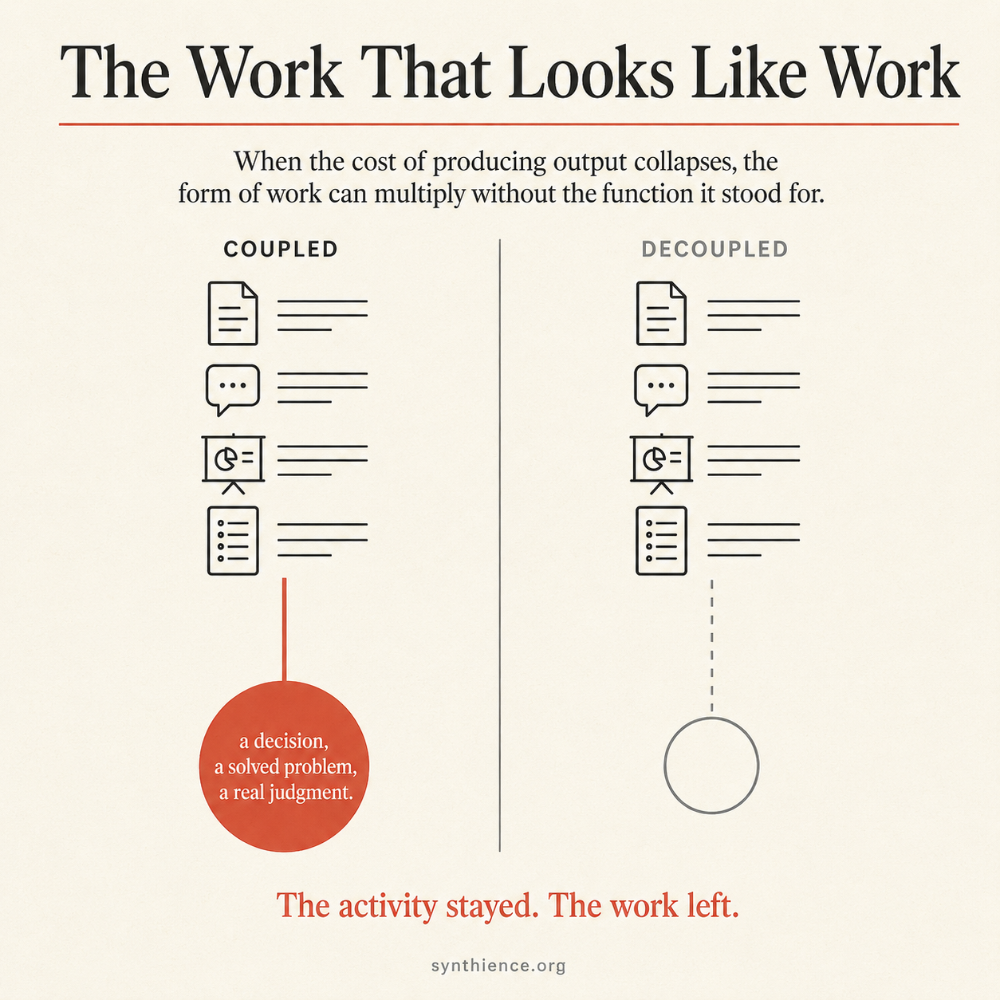

The Work That Looks Like Work
A field note on the surge of AI-generated busy-work, read as the most widespread worked example available of a form decoupled from the function it stood for.

The real event
There is a feeling spreading through knowledge work that is worth naming precisely, because the usual names for it are wrong. You reach the end of a day having produced a great deal: emails sent, a thread summarized, a status update drafted, a document expanded, a deck assembled, a meeting transcribed and turned into action items. The volume is real and the day was full. And if someone asked what you actually made, what now exists that did not exist this morning and matters, the honest answer is often very little. Not because you were idle. Because the day filled with activity that has the shape of work without the substance of it.
This is not a new complaint, and the Institute does not claim the underlying condition is new. Knowledge work has rewarded visible activity as a proxy for value for as long as the category has existed, because the value itself is hard to see and harder to count. What is new is the accelerant. When the tools that perform visible activity become free, instant, and effectively infinite, the proxy stops being a rough approximation and becomes a runaway. The activity detaches from the value it was standing in for, and keeps going.
In SI0001 terms, this is a form-without-coupling case: the visible structure that once indicated a function stays present, while the function it stood for is no longer reliably attached to it.
The real event is not replacement. It is inflation. AI is not taking knowledge work away. It is flooding it, with output that looks like work, registers as work on every dashboard, and is decoupled from the thing the work was for.
Where the pressure comes from
It is tempting to treat the flood as a problem of individual discipline, something a person could opt out of by being more disciplined about the tools. Often they cannot, because they did not choose it. The flood was assigned. It becomes structurally dangerous wherever AI adoption is mandated or rewarded through visible usage rather than demonstrated coupling to value. Once “are you using the tool” becomes the practical metric, the rational response is to use the tool, visibly, a lot. The person generating the busy-work may be doing exactly what was asked, in good faith, and producing decoupled output anyway, because the mandate optimizes for the form and is silent on the coupling. Not every organization works this way; the note is about what happens where this arrangement is present.
The structural reading
Here is the part that travels beyond the complaint.
Knowledge work has a form and a function. The form is the visible output: the documents, the messages, the decks, the summaries, the activity that can be seen and counted. The function is the thing the output was for: a decision made better, a problem actually solved, a judgment exercised that moved something real. The form was always a proxy for the function, an imperfect stand-in adopted because the function is hard to measure directly.
What held the proxy together was never accuracy alone. In many ordinary cases, it was the cost of producing the form. You could not produce much of the form without doing some of the function, because the form was expensive to make: to summarize a thread you had to read it, to write the report you had to know the thing the report was about. That expense, the comprehension and effort the form demanded, was the binding thing holding the form to the function. AI collapses the marginal cost of producing the visible form, and with it the old mechanism that forced some functional engagement to happen along the way. The summary can now arrive without anyone accountable having read the thread.
This is why the cases that look different are the same case. The summary that genuinely used to matter and the report that never mattered are not two phenomena. In both, cost was doing the tethering, and cost is what collapsed. Where there was a real coupling, removing the cost severs it. Where the coupling was always weak, removing the cost lets the empty form be produced without limit. Either way the enforcing mechanism is gone, and the form floats free of whatever function it did or did not carry.
When output becomes free to generate, the form can be produced in unlimited quantity with none of the underlying function attached. The summary of a thread nobody read, the report nobody requested, the update that restates what everyone already knew: each is the form of knowledge work, fully intact, passing every test that looks for the form, while coupled to nothing. The activity is present. The function is no longer guaranteed by the activity. They have come apart.
And the loss is invisible to exactly the instruments meant to catch it, because those instruments check for the form. The dashboard that counts AI adoption sees a success. The activity metrics rise. The output volume climbs. Every number that measures the form improves at the moment the function drains out of it, because the form is precisely what is being produced in bulk. The audit passes its own test while the work it was auditing quietly stops happening.
The second-order error
There is a mistake riding on top of this one, and it shows the same structure a level up. When an organization sees its AI-adoption metrics climb and its output volume rise, it can conclude that productivity has risen. The reasoning is that AI automated a large share of the work, so more work is getting done with the same people, so the organization is more productive. This is the mistake in its purest form. Output volume is not false evidence of productivity; it is insufficient evidence, once the cost of producing output has collapsed.
What AI automated was the form, the visible production of output. It did not, by itself, preserve the function: the judgment and verification and deciding-what-is-worth-producing that made the output worth anything. It collapses the cost of producing the form, not the cost of being answerable for what the form implies, and that second cost is the one the organization quietly stops paying when it treats the form as the job. The belief that automating the form means automating the job is a coupling assumption that no longer holds. The organization sees the form being produced faster and infers that the function is being performed faster, when in many cases the function has been removed from the loop entirely and only the form remains. It sees the seat occupied and assumes someone is doing the job the seat implies. The output is real. The evidence that it is coupled to value is not.
The distinct harm at this level is that decisions made on the strength of phantom productivity can become difficult or impossible to reverse. An organization that reads its rising output as rising productivity may act on the reading. It may thin the headcount that was performing the function, because the form is now produced without them, and it may do this confidently, because every metric endorses it. The loss does not surface at the moment of the cut. It surfaces later, when something load-bearing breaks and the judgment that would have caught it is no longer anyone’s job. By then the people who held the function may have been gone for several budget cycles, and rebuilding the capability can cost far more than the savings that justified removing it. The form-without-coupling error is cheap to make and expensive to discover, and the gap between the two is where the damage compounds.
Why this is not trivial
It would be easy to file this under the ordinary churn of office life, a familiar complaint about meetings and email dressed in new vocabulary. That undersells it in one direction and oversells it in another, and both corrections matter.
It undersells the cost, which is not the wasted hours. Wasted hours are recoverable and have always been part of work. The real cost is what gets dropped when the form is automated and the function is not: in practice, the parts that quietly disappear are the judgment about what is worth doing in the first place and the verification that what was produced is true and complete. Those are the steps a person was doing and a usage mandate does not ask for, so they are the steps that fall away first, unnoticed, while the visible output keeps climbing. The Institute makes no claim here about what a machine can or cannot do; the observation is simply about which steps survive when the only thing measured is the form, and which steps, being invisible to that measure, do not. When the load-bearing steps are the invisible ones, the organization loses them without noticing, because every visible signal says the work is getting done faster than ever.
It oversells the inevitability. None of this is a property of the tools. The same AI that produces decoupled form on a usage mandate produces genuinely coupled work when a human directs it toward a real function and verifies what comes back. The flood is not what AI does. It is what AI does inside an arrangement that measures the form and ignores the coupling. Change what is measured and the same tools stop manufacturing busy-work and start removing it. The condition is structural, which means it is also addressable, which the fatalistic version of the complaint misses entirely.
The pattern is the same one named throughout, now visible at a scale everyone can feel directly: a functional form decoupled from its function, fast, by a pressure no single participant chose. The daily experience of AI-amplified busy-work is the version of it that costs nothing to study, because you are living inside the example.
The practical part
For an individual inside the flood, the move is not to refuse the tools and not to perform more activity faster. It is to ask, of the work in front of you, the diagnostic question directly. What function is this output actually coupled to? The three tests, was it requested, was it read, did a decision turn on it, are not bureaucratic requirements. They are severance signals. Work can matter before anyone requests it, before anyone reads it, and before a decision visibly turns on it: the insurance that pays off rarely, the redundancy that matters only when something fails, the contribution that counts only in aggregate. The test for a latent function is simple: would anything break, degrade, or become riskier if the output did not exist. But when all three answers are honestly absent and that test also fails, the issue is no longer low value. It is uncoupling. That is not a task to do faster with AI. It is a task whose value was never in the producing.
The harder version of the move belongs to anyone who measures other people’s work. If the metric is the form, the form is what you will get, in unlimited supply, decoupled. The only check that survives the flood is one that asks what the activity was coupled to, and that question cannot be answered by counting output, because counting output is precisely the instrument the flood defeats. What a person shipped that mattered, what judgment they brought that the volume does not capture, what now exists and is real: those resist the flood because they ask about the function, not the form.
There is a quiet test buried in all of this, useful well beyond the office. When you notice a great deal of work being produced and feel reassured by the volume, ask what it is coupled to. The question is not whether the output is impressive. The question is whether anything depends on it. Sometimes the answer is nothing. Sometimes the activity stayed and the work left.
A note on this Field Note
It names no organization, because the pattern does not belong to one. The condition described here is general, visible across knowledge work wherever AI tools arrive inside arrangements that measure adoption rather than value, and the Field Note is deliberately about the shape of the thing rather than any instance of it. The structural reading it applies, the form-without-coupling pattern and the diagnostic question, is developed across the Synthience Institute’s recent work at synthience.org. The em dash, treated in the companion Field Note, was the version of this pattern you could hold in your hand. This is the version you spend your day inside.